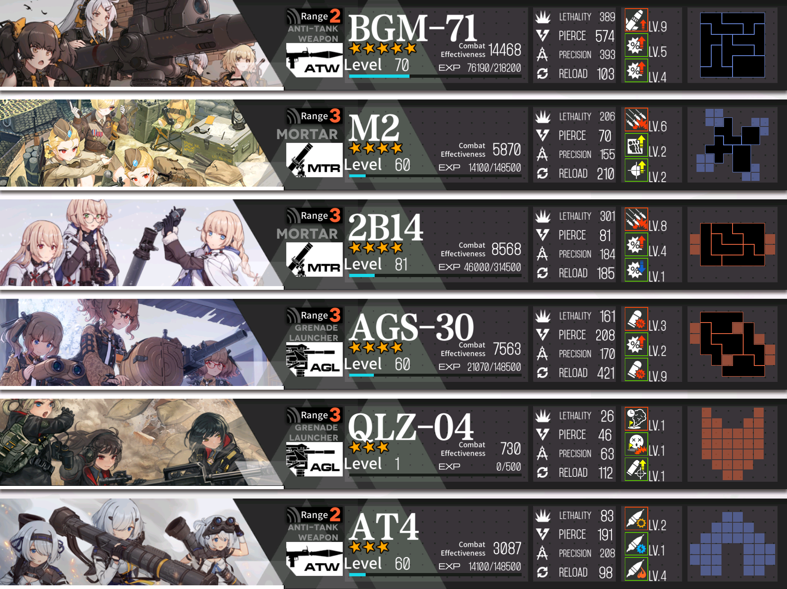

A nice feature of client 2.07 is the new Target Saving system. You can save any enemy group to it, and test all sorts of teams at no cost. I've recorded a number of test fights against all the enemies in the hardest sections of the upcoming Theater.
Each demonstration is done independently from the others. When actually building teams for your theater attempt, you'll need to work out a set of teams that doesn't rely on duplicates of dolls/fairies and won't take too much damage to clear.
Most of the teams shown are far from optimal. You can almost certainly do better than a 1:1 copy of them, which will lower kiting requirements and reduce damage taken. For some more discussion on teambuilding, I recommend checking out this guide.
Advanced 3#
Advanced 8#
Video playlist here. In my quest to find lower-spec teams that can clear each node, some of the fights result in a bit more damage than you may want on a normal run. If you've been keeping up with equipment/fairy crafts, it shouldn't be hard to have something better. A typical selfbuffing rifle (SVD, WA2000, M14, Lee Enfield, G28, and so on) is generally preferable to Springfield - I'm only using Springfield due to her accessibility as an IOP Career Quest reward.
Core 6#
Core 8#
Other Notes#
Type88 mod, Carcano M91/38, and M200(/SSG3000) are all valuable dolls to have in this Theater. I strongly recommend raising and using them. Type88 requires her neural upgrade to be usable but is still reasonably viable at mod2 without a highly leveled Skill 2.
Shield HGs (HS2000 and P22 to an extent) can make certain fights much easier. These are all event dolls so accessibility is limited, but I recommend raising them if you have them/farming them if available in PL.
Taunt and Twin fairies are very useful for mitigating damage. Having them ready at SL10 can make some fights almost free.
ARSMG echelons see limited use in this Theater. You'll want at least one, but it's not a priority to optimize and won't face many hard fights.
If you do have a strong armory, developed fairies, and don't want to think too hard - KSVK mod, NTW mod, M1895 mod, Calico mod, P22, and a 5* Taunt can kill everything in Core 8 except the Pyxis taking little to no damage. There are other viable combinations, but I found that team to work very nicely.
HOCs#

The HOCs used in these videos. Chips are mostly unenhanced, +5 or so at most. The most important thing is to get the HOCs you plan on using to level 60, and equipping some decent (enhanced) 5* chips. Certain skills will also help, but their value varies. BGM/2B14's first skills are probably the most important for dealing with force shields/enemy crowds.